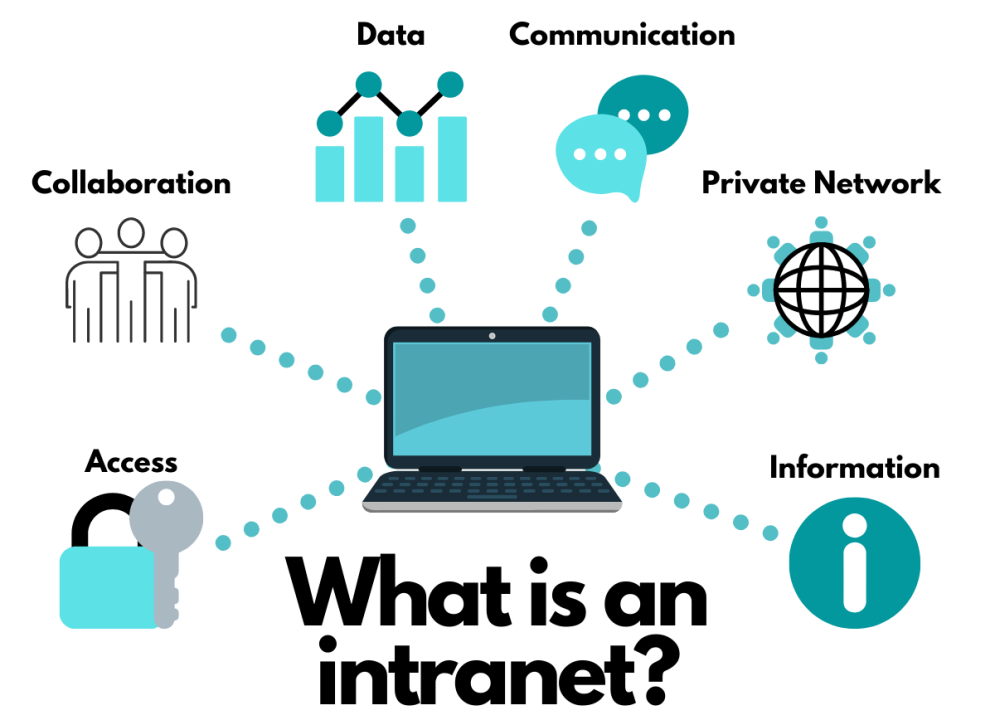

Intranet
Category: Private Networks
Definition
An Intranet is a private network accessible only to an organization's staff. It uses the same technologies as the World Wide Web (such as HTTP and HTML) but is protected by firewalls to prevent public access.
Core Purpose
The primary goal of an intranet is to facilitate internal communication and collaboration. Key uses include:
- Information Sharing: Storing employee handbooks, company news, and internal directories.
- Workflow Management: Managing internal tasks, leave requests, and payroll access.
- Security: Keeping sensitive company data off the public internet while still allowing staff to access it remotely via VPN.
Visual Comparison
Think of the Internet as a public park and an Intranet as a private office building.

Technical Implementation
Even though it is private, an Intranet often looks and feels exactly like a website. It uses Web Browsers to display content, meaning employees don't need special software to use it. However, it is strictly controlled through Authentication (usernames and passwords).